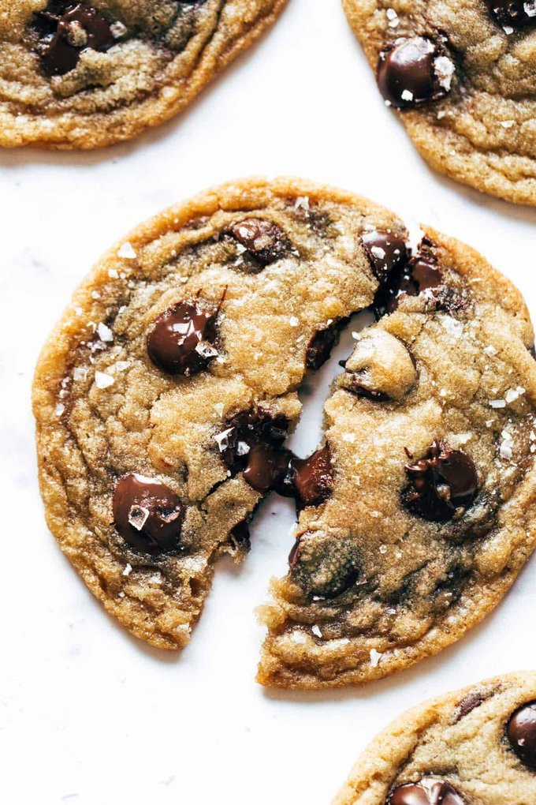
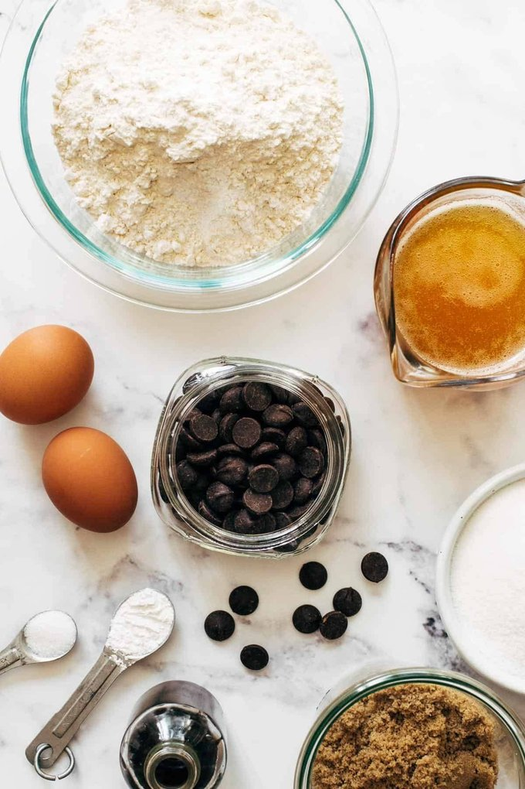

ingredients
unsalted butter
white & brown sugars
vanilla
eggs
flour, baking powder, salt
chocolate chips or chocolate chunks

directions
Brown the butter. Cut the butter into small pieces for even melting. Swirl in a pan over medium heat. It will get bubbly and then foamy – once the butter starts to turn golden brown (happens quickly!), remove from heat and transfer to a bowl to cool for a bit.
Make the dough. You’ll get the cooled brown butter (make sure to scrape in all those golden brown bits!) and sugars going first. Then eggs and dry ingredients to that. Hold off on those chocolate chips!
Let the dough rest! It will need to cool for a bit before you add the chocolate chips so they don’t melt. Once it’s fully cooled, add your choco chips and let the dough rest again to fully hydrate the flour and let that browned butter work its flavor magic.
Scoop and bake! You know the drill. Edges cooked, middle a little soft and puffy.
Okay, let rest one more time. Don’t be mad. But it lets those middles sink and get super dense and barely thick and everything is perfectly chewy-crisp. What a dream.